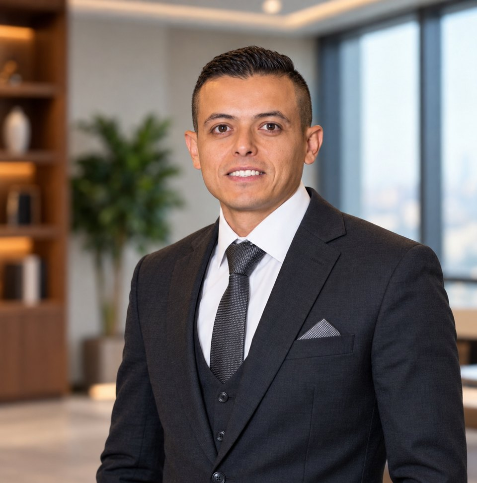

Network Engineering
Campus LAN/WAN, VLANs, trunks, inter-VLAN routing, switching and routing protocols.
Network Engineer specializing in secure network infrastructure, Cisco & MikroTik solutions, Windows Server, and hands-on troubleshooting.

I'm a network engineer based in Fayoum, Egypt, with hands-on experience supporting university IT environments and building reliable, secure network infrastructure.
My work spans switching, routing, VPN connectivity, Windows Server administration, endpoint deployment, network security, and practical troubleshooting. I enjoy translating technical challenges into stable solutions.
Practical infrastructure skills built through real deployment, operations and troubleshooting.
Campus LAN/WAN, VLANs, trunks, inter-VLAN routing, switching and routing protocols.
Firewall rule design, access control, network segmentation and secure branch connectivity.
Windows Server services, desktop deployment, remote access and IT infrastructure support.
Selected technical work. Detailed public documentation can be added without exposing private network configurations.
Deployed Windows imaging across six university computer labs using WDS/PXE, streamlining workstation provisioning and repeatable installations.
Configured firewall controls, NAT rules, administration restrictions and OpenVPN-based connectivity for branch networks.
Built and troubleshot VLAN segmentation, trunk ports and inter-VLAN routing using Cisco switching and routing environments.
Managed RDP access and session policies, and implemented monitoring and blocking controls against repeated unauthorized login attempts.
Reserved for original screenshots after removing private information. No screenshots are published here yet.
Campus network operations, infrastructure troubleshooting and large-scale Windows deployment support in Fayoum.
IT lab preparation, structured connectivity, servers, remote support and day-to-day technology operations.
Completed military service, developing operational discipline, leadership and problem-solving experience.
IT user support, diagnostics and day-to-day technical troubleshooting.
Routing & switching network training
Huawei networking certification (historical; expired)
Digital Egypt Youth / NTI · 2025 · 95% score
Network Track · Bronze Medal (2018–2019)
120-hour technical course · 2018
2016 – 2020
Have a network infrastructure challenge, an IT opportunity or a project in mind? I'd love to hear about it.